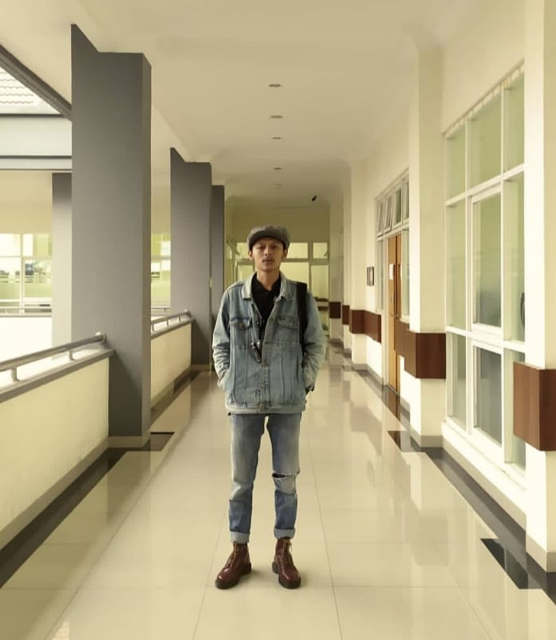

Saya adalah pengembara di dunia kelistrikan, perekayasa elektronika dan IoT, serta penikmat kata dalam sastra. Ini adalah wadah tempat saya membagikan karya, eksperimen logika, hingga perenungan rasa.
Dokumentasi pengalokasian daya, perancangan sistem, panel listrik, dan wiring diagram.
Eksperimen perangkat keras, mikrokontroler ESP32, Arduino, dan troubleshooting alat.
Tempat rehat yang berisi perenungan rasa, tulisan ringan, dan kumpulan puisi.